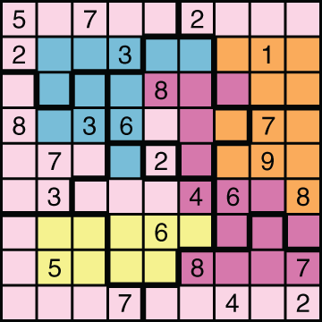
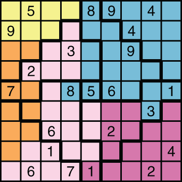
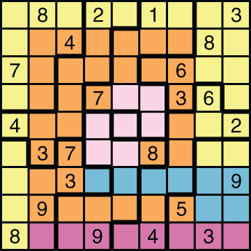
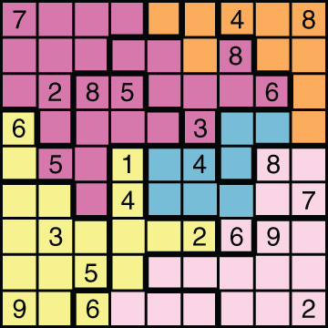
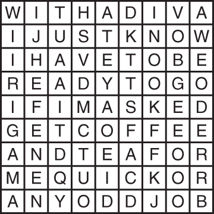
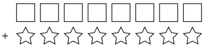

When it comes to placement on Broadway marquees, one has to be aware of stars’ egos. Stars that are equally famous need to be treated equally.
These puzzles are Surplus Star Sudoku, a variant which incorporates two puzzles: Surplus Sudoku and Star Battle.
Each colored area contains exactly two stars, and each row and column contains exactly one star (except for one row and one column, which will contain two stars). No two stars may be in adjacent squares, orthogonally or diagonally. Additionally, each area bounded by a bold outline either contains zero stars or exactly two stars.
Each row and column contains the numbers 1-9 exactly once each. Each area bounded by a bold outline either contains a single number (if it’s a one-cell region) or the numbers 1-9 exactly once each except for one repeated number (if it’s a ten-cell region). Additionally, the set of stars must also contain the numbers 1-9 exactly once each, except for one repeated number.




MARQUEE


(B&W printer friendly version, no additional puzzle content)